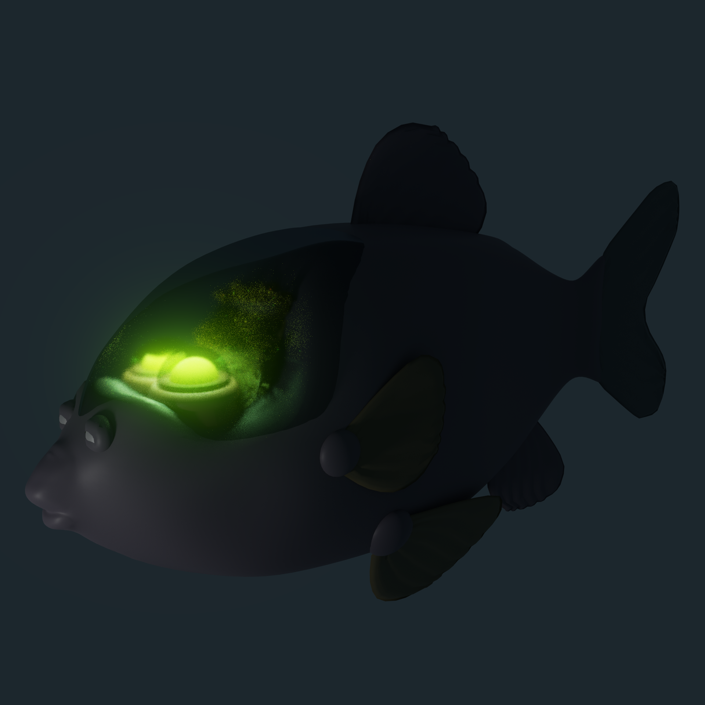
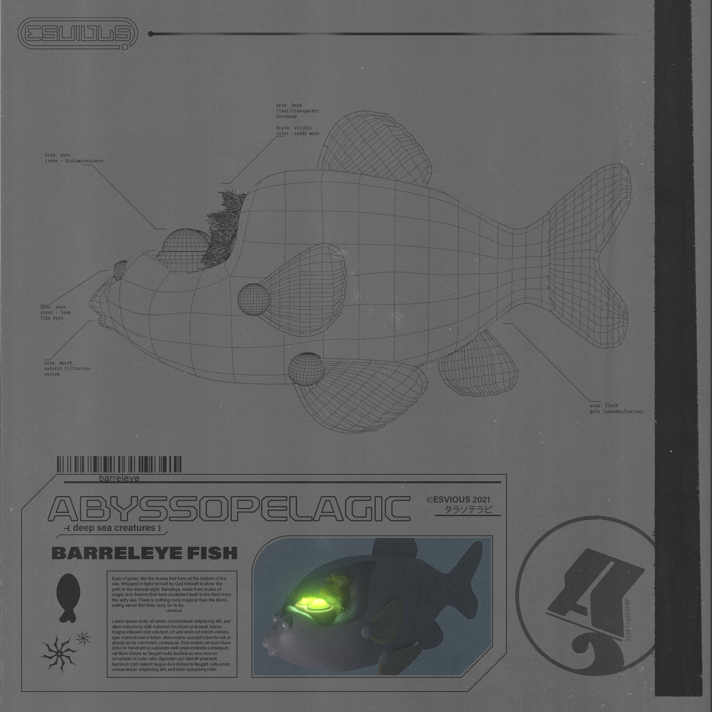
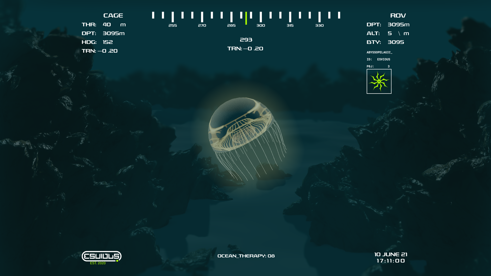
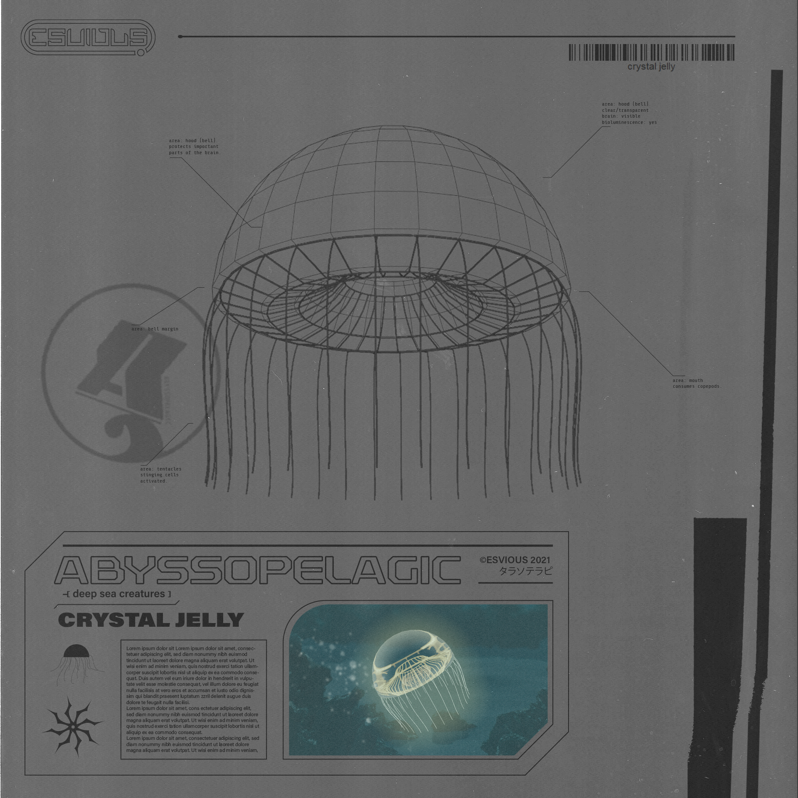
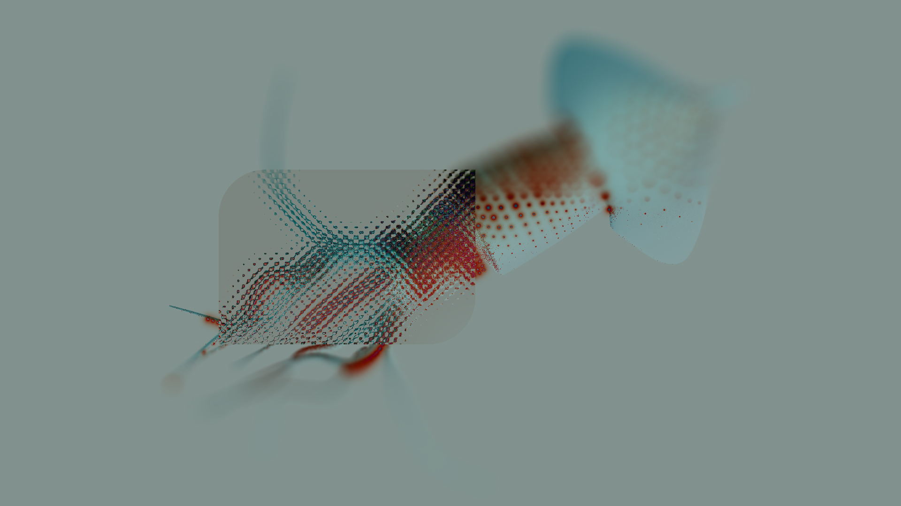
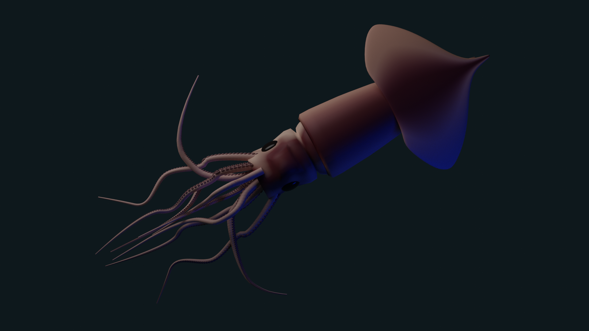
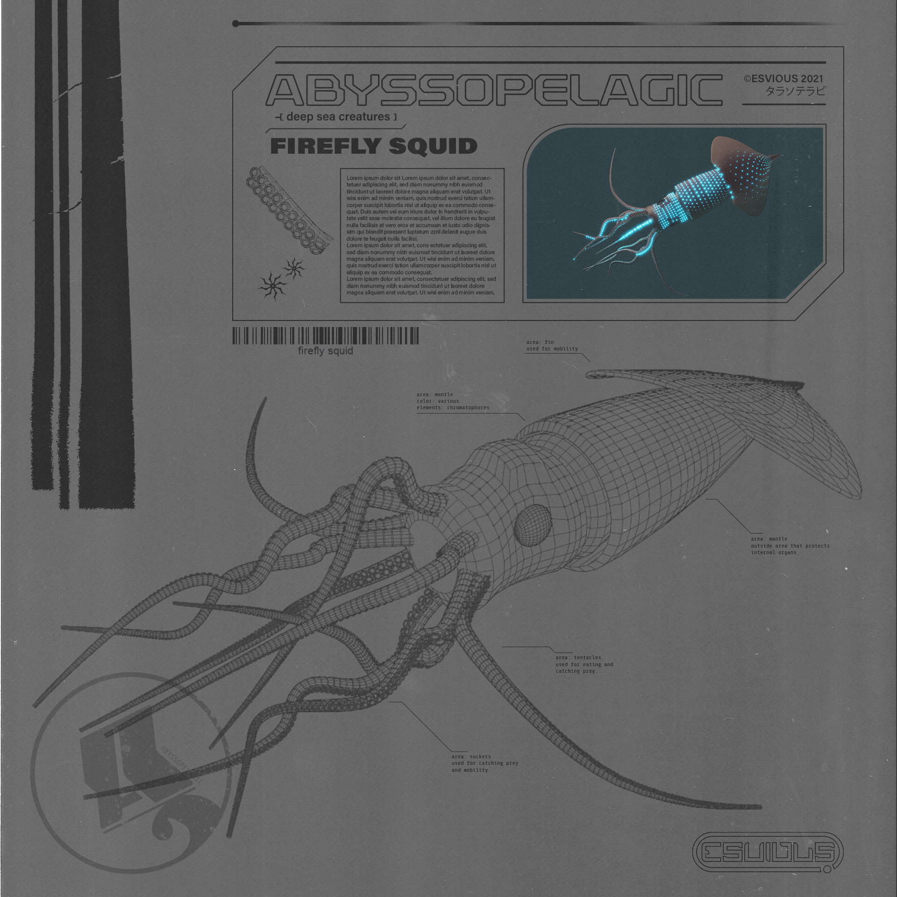

The idea behind Abyssopelagic was to focus on comprising two styles of art into one, to showcase a contrast of themes and designs. The 3D graphics within the 2D plane create a visual atmosphere of looking into a flat surface. The small window of the 3D photo presents itself as looking into the mind of the concept. The aquatic and vintage themes come from a passion for deep ocean life and vintage textures.
Barreleye Fish


Crystal Jelly


Firefly Squid


